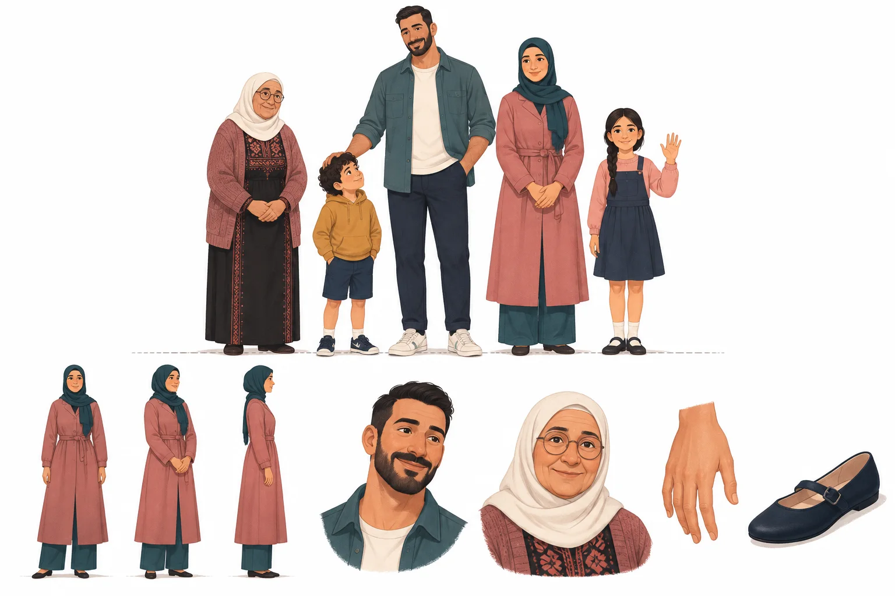
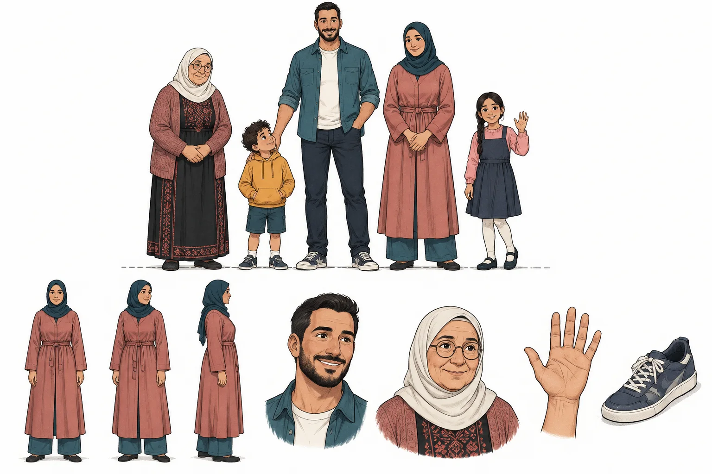
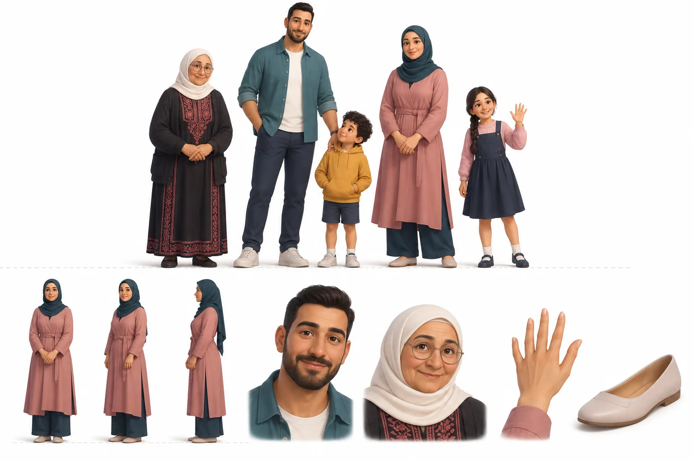
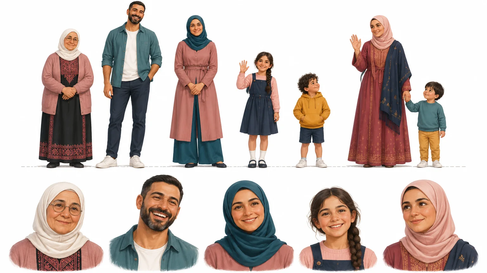

استكشاف الشخصيات، قبل أي تعديل على الهيرو
من أشكال هندسية إلى ناس حقيقيين
الشخصيات السابقة كانت نقطة ومعينا: قريبة من الشعار، لكنها بلا تشريح ولا ملامح. هنا ثلاثة اتجاهات لشخصيات بشرية مرسومة، على العائلة نفسها وبالألوان نفسها، ليكون الفرق في الأسلوب وحده.
الاتجاهات الثلاثة
كل لوحة فيها: صف أطوال للعائلة، دوران للأم (أمام، ثلاثة أرباع، جانب)، وتفاصيل وجهين ويد وحذاء.

أ. تحريري مرسوم الموصى به
- مساحات لون بملمس جواش وظل واحد ناعم، بلا خطوط خارجية.
- أدفأ الثلاثة: يد الأب على رأس ابنه، ونظرة الولد لأبيه، علاقة تقرأ من أول نظرة.
- الوردي والأزرق يظهران كقماش حقيقي بطيات، لا كلون مسطح.
- بلا خط خارجي، فيحتاج أرضية فاتحة ليبقى واضحا في الأحجام الصغيرة.

ج. حبر وجواش البديل
- خط حبر كحلي متغير السماكة فوق لون مسطح، بروح كتب الأطفال الأوروبية.
- الأوضح في الأحجام الصغيرة، والأقرب لخيط الهوية المتقطع.
- أقل دفئا، ويميل إلى القصة المصورة أكثر من موقع مؤسسة.

ب. حجم ناعم ثلاثي الأبعاد مستبعد
- أعلى صقلا وإضاءة، وتشريح مقنع.
- أسلوب أفلام الرسوم الشائع: يشبه مئات المواقع ولا يخص الميثاق.
- يتصادم مع تسطيح الشعار والغرزة، ويحتاج بيئة ثلاثية الأبعاد كاملة حوله.
| المعيار | أ. تحريري | ج. حبر | ب. حجم |
|---|---|---|---|
| التشريح والنسب | مقنع | مقنع | مقنع |
| نضج الوجوه والتعبير | الأدفأ | جيد | مصقول، أقرب للدمية |
| الملابس والقماش | طيات وملمس | طيات بالخط | قماش مجسم |
| الارتباط بألوان الهوية | الأقوى | قوي | متوسط |
| الوضوح في حجم صغير | جيد على أرضية فاتحة | الأوضح | جيد |
| التميز عن الشائع | مميز | مميز | شائع |
| الانسجام مع الغرزة والخيط | ينسجم ببيئة مرسومة بالملمس نفسه | الأسهل | الأصعب |
ورقة الشخصيات: الاتجاه «أ»
الطاقم كاملا على خط أرض واحد، ثم خمسة تعبيرات. عائلتان: البيت الذي يوقع (الجدة، الأب، الأم، الابنة، الابن)، والأم المعيلة وصغيرها في فلسطين.

طول البالغ6.5 رؤوس
طول الطفلة (9 سنوات)5 رؤوس
طول الصغير (4–5 سنوات)4 رؤوس
الوقفةالثقل على ساق واحدة
الخط الخارجيلا يوجد
التظليلدرجة ظل واحدة، ضوء من أعلى اليسار
الملمسحبيبات ورق خفيفة
الألوانوردي وأزرق الهوية، كحلي، ذهبي قليل
التراثتطريز على ثوب الجدة والأم المعيلة فقط
الأحذية والملابسبلا أي علامات تجارية
ما يجب معرفته قبل الاعتماد
- اللوحات مرسومة بنموذج توليد صور، لا بيد رسام. هي اتجاه فني ومرجع، وجودتها النهائية تحتاج عين فنان أو جولة تنقيح.
- في لوحتي الاستكشاف «أ» و«ج» حذاء عليه ما يشبه علامة تجارية. ورقة الشخصيات صححته، والنسخة النهائية ستخلو منه.
- الشخصيات ستدخل الموقع صورا شفافة لا رسوما بالكود: تتحرك كاملة (عمق، طفو، ظهور) ولا تلوح بأذرعها كما كانت الأشكال الهندسية تفعل.
- بعد الاعتماد: يعاد رسم مشهد الهيرو كله بالملمس نفسه (البيتان، الشجر، القبة)، ثم تستبدل الشخصيات في باقي الأقسام واللعبة.
النسخ السابقة، محفوظة كما كانت
كل نسخة موقع كامل منفصل، لا يتأثر بما يتغير في النسخة الحالية.